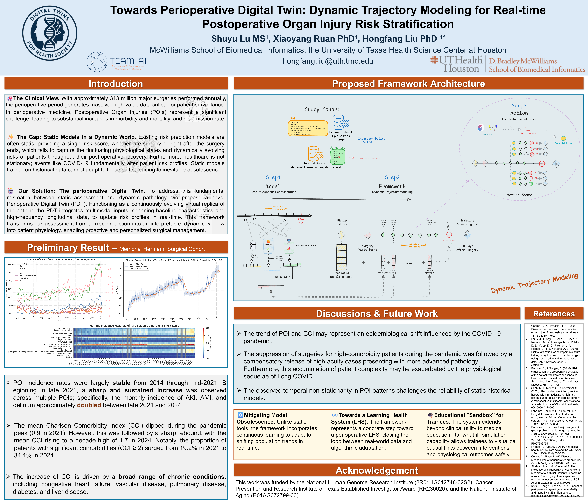

Towards Perioperative Digital Twin: Dynamic Trajectory Modeling for Real-time Postoperative Organ Injury Risk Stratification
Shuyu Lu, Xiaoyang Ruan, Hongfang Liu
Proposed framework with preliminary cohort analyses. Simulation, adaptive learning, and clinical decision support are research directions, not demonstrated clinical capabilities.
This poster outlines a perioperative digital twin framework and reports exploratory trends in postoperative organ injury and comorbidity in a surgical cohort. These observations motivate dynamic risk modeling; they do not establish causal effects or clinical effectiveness.


Rendered from the author-provided PowerPoint poster. Original poster content and acknowledgements are retained. Open the full-resolution image to read the figures and references.
← Back to Shuyu Lu's website